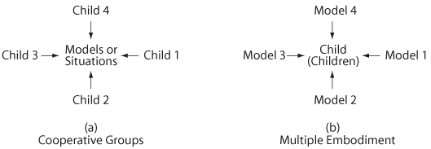
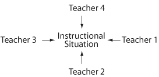

|
|||||||||||||||||||||||||||||||||||||||||||||||||||||||||||||||||||||||||||||||||||||||||||||||||||||||||||||||||||||||||||||||||||||||||||||||||||||||||||||||||||||||||||||||||||||||||||||||||||||||||||||||||||||||||||||||||||||||||||||||||||||||||||||||||||||||||||||||||||||||||||||||||||||||||||||||||||||||||||||||||||||||||||||||||||||||||||||||||||||||||||||||||||||||||||||||||||||||||||||||||||||||||||||||||||||||||||||||||||||||||||||||||||||||||||||||||||||||||||||||||||||||||||||||||||||||||||||||||||||||||||||||||||||||||||||||||||||||||||||||||||||||||||||||||||||||||||||||||||||||||||||||||||||||||||||||||||||||||||||||||||||||||||||||||||||||||||||||||||||||||||||||||||||||||||||||||||||||||||||||||||||||||||||||||||||||||||||||||||||||||||||||||||||||||||||||||||||||||||||||||||||||||||||||||||||||||||||||||||||||||||||||||||||||||||||||||||||||||||||||||||||||||||||||||||||||
|
Intermediate
Teachers'
Knowledge of Rational Number Concepts* |
|||||||||||||||||||||||||||||||||||||||||||||||||||||||||||||||||||||||||||||||||||||||||||||||||||||||||||||||||||||||||||||||||||||||||||||||||||||||||||||||||||||||||||||||||||||||||||||||||||||||||||||||||||||||||||||||||||||||||||||||||||||||||||||||||||||||||||||||||||||||||||||||||||||||||||||||||||||||||||||||||||||||||||||||||||||||||||||||||||||||||||||||||||||||||||||||||||||||||||||||||||||||||||||||||||||||||||||||||||||||||||||||||||||||||||||||||||||||||||||||||||||||||||||||||||||||||||||||||||||||||||||||||||||||||||||||||||||||||||||||||||||||||||||||||||||||||||||||||||||||||||||||||||||||||||||||||||||||||||||||||||||||||||||||||||||||||||||||||||||||||||||||||||||||||||||||||||||||||||||||||||||||||||||||||||||||||||||||||||||||||||||||||||||||||||||||||||||||||||||||||||||||||||||||||||||||||||||||||||||||||||||||||||||||||||||||||||||||||||||||||||||||||||||||||||||||
|
Thomas R. Post.
|
|||||||||||||||||||||||||||||||||||||||||||||||||||||||||||||||||||||||||||||||||||||||||||||||||||||||||||||||||||||||||||||||||||||||||||||||||||||||||||||||||||||||||||||||||||||||||||||||||||||||||||||||||||||||||||||||||||||||||||||||||||||||||||||||||||||||||||||||||||||||||||||||||||||||||||||||||||||||||||||||||||||||||||||||||||||||||||||||||||||||||||||||||||||||||||||||||||||||||||||||||||||||||||||||||||||||||||||||||||||||||||||||||||||||||||||||||||||||||||||||||||||||||||||||||||||||||||||||||||||||||||||||||||||||||||||||||||||||||||||||||||||||||||||||||||||||||||||||||||||||||||||||||||||||||||||||||||||||||||||||||||||||||||||||||||||||||||||||||||||||||||||||||||||||||||||||||||||||||||||||||||||||||||||||||||||||||||||||||||||||||||||||||||||||||||||||||||||||||||||||||||||||||||||||||||||||||||||||||||||||||||||||||||||||||||||||||||||||||||||||||||||||||||||||||||||||
|
The Rational Number Project (RNP) has been funded by the National Science Foundation (NSF) since 1979. The project originally involved three universities (Northern Illinois, Minnesota, and Northwestern) and utilized well defined theory-based instructional and evaluation components as well as an overall plan for validating project-generated hypotheses. The project's earlier intent was to describe children's rational number development from its beginnings to its formal operational level in well-defined instructional settings. The major goal was the identification of psychological and mathematical variables which impede and/or promote the learning of rational number concepts. More recently (1984 - 88) the RNP has been focusing on the role of rational number concepts in the development of proportional reasoning skills. The current activity extends these beginnings to include work with in-service teachers in the development of a model middle school mathematics teacher education program. A major objective is to develop and promote instructional leadership at the local level by retraining teams of teachers as master instructors and as providers of staff development for their peers. Theory-based materials and methods consistent with our previous work with children will be employed. Our formally stated objectives are: a) To develop and conduct a model in service teacher education program designed to enhance teacher understandings in important mathematical and pedagogical domains. The theoretical underpinnings of this work will be consistent with that of our previous work with children. b) To conduct an assessment of the conceptions and misconceptions which elementary teachers have about mathematical topics germane to middle school mathematics programs. Assessment results will be compiled into mathematical knowledge profiles of teachers, similar to those we have generated for students. These profiles will then be used to guide development of other project components. c) School-based teams of teachers will be retrained to become master teachers themselves and to function as members of a school-based leadership team with increasing responsibilities for staff development. TEACHER EDUCATION AS AN EXTENSION OF OUR EARLIER WORK The assessment developed in this project for use with teachers is an attempt to apply the theoretical principles from our previous work with children. For example, the perceptual variability principle suggests that experiences provided should differ in outward appearance while retaining the same basic conceptual structure. Children often become sidetracked with irrelevant characteristics of a situation, especially when the grasp of the emerging concept is incomplete. Early conceptualizations are often distorted. This is as true for teachers as it is for children. Teachers need to be exposed to aspects of the teaching act in a wide variety of conditions or contexts. For this reason, this project will focus on a broad spectrum of teacher roles (for example, as an instructor of large and small groups, as a tutor, as a student, as an interviewer, as a diagnostician, as a confidant, etc.) and relate these roles to the specific teaching-related tasks which teachers are expected to perform (Leinhardt & Greeno. 1986). Just as mathematical abstractions are themselves not contained in the materials which children use, it likewise seems true that abstractions and generalizations relating to the profession of teaching are not necessarily embedded in any single role which the teacher might assume. Such abstractions and generalizations can be gleaned only from overt consideration of a variety of situational, contextual, and model activities, roles, and tasks. Thus, in the same way that children are encouraged to discuss similarities and differences between various isomorphs of mathematical concepts, teachers will be encouraged to discuss similarities and differences between pedagogically related actions in various mathematical contexts. A wide variety of avenues will be exploited to provide the foundation for these discussions. Clinically based experiences, videotapes, demonstration lessons, and other types of sharing of experiences will be utilized during the 1988-89 school year. We hypothesize that it is the opportunity to examine a variety of situations from a number of perspectives and to gain the perspectives of other individuals that enables the development of pedagogically related higher order understandings and processes. In the Applied Mathematical Problem Solving (AMPS) project, cooperative groups of intermediate-level children were asked to focus on a variety of mathematical models, concepts, and problem situations and then to discuss and come to agreement as to the intended meaning(s). See Figure 7-1a . Individual students were also asked to focus on several models or embodiments of a single mathematical idea and to indicate similarities and differences in the different interpretations (see figures 7-1 and 7-2). Later the group task was to reconcile these interpretations in such a way as to arrive at the most probable (widely agreed upon) meaning. We believe that teachers can also profit from discussing single pedagogical incidents and attempting to reconcile the most probable meanings. These two types of interactions can be viewed diagrammatically as follows: 
These models will be used directly with teachers and can also be extended to include instructional settings. This could be depicted as follows:  Notice that each of the situations presented in these figures is, in fact, a variation of the multiple embodiment principle applied to various patterns of human interaction. In our earlier work with children, we continually attempted to stress higher order thinking and processes. Whether these related to rational number concepts or to issues regarding proportionality or mathematical problem solving, it was important to us to encourage children to go beyond the single incident and to reflect on general meanings. This invariably involved a process which has become known as "metacognition." We were encouraging children to think about their own thinking. In a similar fashion, it seems reasonable to encourage teachers to think seriously about the teaching acts of both themselves and others. The AMPS project determined that successful problem solvers tend to think at more than one level. These children were not only thinking about the problem at hand, they were also aware of their own thinking processes. The best problem solvers also attempted to "generalize" problem approaches, heuristics, and problem types in a manner similar to that described by Kruteskii (1976). The ability to be simultaneously the "doer" and the "observer" is critical to the solution of many multistage problems. Likewise, it seems important that teachers be able to identify behaviors at a number of levels as they occur in their own thinking. Teachers not only teach content but also implicitly transmit attitudes and understandings about mathematics. Whether it is desirable or not, students think of teachers as models of "correct problem-solving behaviors." As teachers act out or demonstrate solutions to problems, it is especially important for them to be able to reflect on their own problem-solving behaviors and to help students identify their own metacognitive processes. The ability to accurately and insightfully observe one's own problem-solving behavior may be closely related to the ability to accurately observe, describe, and critique the problem-solving behavior of others. A third major aspect of the model suggested here includes the provision of experiences focused on an integration of content, pedagogy, and psychology. That is, the mathematical content discussed will be presented in a manner which reflects sound psychological principles using research-validated teaching techniques (Good & Grouws, 1977, 1979). In the same way that the ten basic skills suggested by the National Council of Supervisors of Mathematics in 1978 (problem solving, estimation, approximation, graphical analysis, etc.) cannot be taught effectively in isolation from one another, the teaching act cannot be separated from the mathematical content which it is intended to convey nor from the psychological overtones which human beings tend to impose on cognitive schema. The following example suggesting a coordination of the content and psychological dimensions arises from our previous work with children. Our observations suggest that children whose rational number concepts are insecure tend to have a continuing interference from their whole number schemas. This interference needs careful consideration by teachers. Clearly it would be inadequate simply to inform children when the schemata they have developed for dealing with whole numbers are appropriate and when they are not; children need to learn how to make such determinations on their own. There are also times when various mathematical domains can be related to one another. For example, the solution of a missing value problem (a/b: c/x), the generation of equivalent fractions, and the generation of a second ratio reflecting an equal probability have much in common. Likewise the unit rate in a proportional situation can be related to the slope (m) of a linear function with an equation of the form y = mx. Many other examples exist. An example implying a relationship between content and pedagogy arises from the work of Robert Davis (personal communication, August, 1985). Davis suggests that new concepts should be introduced in a manner which establishes an "assimilation paradigm" or a conceptual framework to which future variations can be compared and contrasted. Applied to the part-whole interpretation of rational numbers, this suggests that initial concepts be solidified within a single perspective (for example, circular pieces) before others are introduced (for example, Cuisenaire rods, number lines, chips, etc.). Kieren (1976) has suggested that early (part-whole) embodiments or interpretations also serve the function of helping to establish an appropriate semantic and definitional structure. These are of course necessary for extension to related domains. Thus, a technique for teaching new content emerges, one which integrates mathematical structures with sound pedagogical teaching. Such techniques are based on validated psychological principles of conceptual development. Many similar examples can be extracted from our work and the work of others. The parallels existing between previously understood work with children and processes important to effective teaching hold great promise for teacher education. Our attempt to translate these understandings from one domain to the other will provide a context within which the development of project components can be both understood and fostered. THE MATHEMATICAL KNOWLEDGE PROFILES OF TEACHERS A major objective of this project is the generation of profiles of mathematical understandings for teachers, similar to those we have generated for students. We then intend to create teacher training materials based in part on these profiles and in part on the same principles of learning and instruction that we have validated for youngsters. We know from pilot investigations (for example, Lesh & Schultz. 1983; Post et al., 1985) that many of the same misunderstandings and "naive conceptualizations" that we have identified in youngsters also are prevalent among teachers. Yet, we really do not know very much about what mathematics intermediate level (grades 4 - 6) teachers actually do know and understand. The knowledge profile is a theory-based assessment focused on generating profiles of teachers' content understandings. Part 1 consists of short answer items. Part 2 requests pedagogical explanations of solutions generated, and Part 3 consists of a two-hour interview, all relating to rational number concepts: part-whole, decimals, ratios and percents, proportionality, and multiplication and division. Part 1 had two longer versions (A & B) which consisted of seventy-eight short answer items. The two shorter versions (AA & BB) each contained fifty-eight items. Seventy-five minutes was allotted for the teachers to complete Part 1. It was possible to gather a wider variety of information by developing multiple versions which had some items in common. Table 2 below provides the means for the Minnesota site for Part 1 of the instrument. All versions contained items dealing with very fundamental notions about fractions and decimals. Part 1 also contained 17 items which were one-step multiplication and division problems. These problems addressed hypotheses relating to partitive and quotative division and to achievement levels as a function of the relative sizes of divisor, dividend, and quotient. One test version had items which dealt with non integral numbers in fraction form. The other version contained parallel items but contained decimals rather than fractions. There were seventeen items of each type. Fourteen were partitive or quotative division, and three involved multiplication. Table 1 indicates the number of items dealing with each subtopic of Part 1. A given test version does not contain all item categories.
Part 2 of the assessment contained three versions (C, D, and E). Each contained six problems, which requested that the teacher provide as much information as possible relative to their thought processes, solution procedures, etc. Many Part 2 items also asked for some indication of how this information would be taught to children. Version C contained types of problems: (a) partitive division, (b) missing value, (c) one-step multiplication with fraction as multiplier and multiplicand, (d) one-step division containing decimals, (e) a new kind of project-developed problem, currently referred to as an effect problem, and (f) finding the unit rate given two decimals. Results of type f problems will be discussed in this paper. Version D also contained six problems: (a) a numerical comparison problem with equivalent fractions, (b) a quotative division problem with fractional numbers as entries, (c) a concept of unit problem with chips, (d) a more difficult effect problem, (e) a quotative division word problem with fractions less than one, and (J) a word problem involving ratios. The Illinois site utilized a third version dealing with other aspects of order, equivalence, and ratio. Part 3 of our Teacher Profile consists of a structured interview. This interview was related to Parts 1 and 2. We attempted to interview teachers in each third of the distribution of scores on Part 1. In Illinois and in Minnesota fifteen interviews, each lasting from two to two and a half hours, were conducted. The interviews, although structured in nature, provided flexibility for the individual interviewer to pursue questioning lines of interest. In Minnesota four persons were interviewed both before and after participation in the 1988 four-week Summer Leadership Institute. Subjects Results
Table 7-3 contains the mean percentage correct by item category. To provide some indication of the kind of questions asked, we have chosen to include the item with the highest percentage correct and the item with the lowest percentage correct within each category. This is done for each site.
These results are quite disconcerting! The items were developed to reflect what we believe to be the conceptual underpinnings of rational number topics for grades, 4, 5, and 6. We included the subsections on operations with fractions and decimals almost as an afterthought and in an attempt to document that the teachers are thoroughly conversant with precisely those types of items that are in the 4 through 6 curriculum. This was not the case. Ten to 25 percent of the teachers missed items which we feel were at the most rudimentary level. In some cases, almost half the teachers missed very fundamental items (that is, 1/3 -7- 3 [posed vertically) was answered correctly by only 54 percent of the teachers). The remaining categories of items were adapted from some of our earlier work with children and our attempts to identify several of the more important topical areas related to, and necessary for, the development of proportional reasoning abilities-overall mean scores of less than 70 percent certainly did not imply overall teacher "mastery" of these topical domains. Of course, some teachers did relatively well. Many did not. Perhaps more troubling than overall means are the distribution patterns identified within the various item clusters. Regardless of which item category is selected, a significant percentage of teachers were missing one-half to two-thirds of the items. This percentage varied by category, but in general 20 to 30 percent of the teachers scored less than 50 percent on the overall instrument. It was not our intention to assess only what teachers do and do not know, but rather to try to understand the way in which teachers understand these important ideas. For example, each of the three versions of Part 2 of the teacher profile consisted of six questions in a word problem format. Teachers were asked to solve the problem, and then to indicate how they would explain their solution to a child who did not yet have the concepts involved. Our intent was twofold: first, to determine whether teachers could themselves solve the problems, and second, to determine the conceptual and pedagogical adequacy of the explanations which they provided. Responses were categorized across six major variables:
Each of these categories invariably contained multiple (usually five to eight) subclassifications depending on the particular problem. These subclassifications can be observed in the next set of tables. Shulman's category of content knowledge as well as his category of pedagogical content knowledge were of concern to us (Shulman, 1986). The problems were adaptations from our previous work with children, and were primarily concerned with areas of rational number and proportionality. For the most part they were not precisely the type of problem which appears in the intermediate grade curriculum, and would more probably be found at the junior high level. We feel strongly, however, that a firm grasp of the underlying concepts is an important and necessary framework for the elementary teacher to possess, especially those who are teaching related concepts to children in the intermediate grades. Figure 7-3 indicates results of this analysis applied to a problem concerned with finding a unit rate. Note the subclassifications referred to earlier. This problem was administered to approximately half of the teachers at the Minnesota site. (N=77)
As noted above, less than half (44.7 percent) of the teachers were able to solve this problem correctly. Strategies used range from crisp accurate processes to laments such as "this is a very tricky problem," this latter response followed by a blank sheet. In addition, only a small percentage (10.5) of those able to solve the problem correctly provided what was considered a coherent, rational, and pedagogically "acceptable" explanation. (Recall that teachers were asked to explain their solutions to a child.) Similar results were obtained for the majority of the other Part 2 questions. There were three versions of Part 2, each containing six questions; two were administered in Minnesota, the other in Illinois. Thus there exists data on eighteen such problems. Table 7-4 presents summative statistics relating to twelve of the eighteen Part 2 questions referred to above. Notice the large percentage of reliance on procedural explanations and also the significant percentage of teachers who did not attempt to solve the problems. These were recorded in the blank answer column.
Our results indicate that a multilevel problem exists. The first and primary one is the fact that many teachers simply do not know enough mathematics. The second is that only a minority of those teachers who are able to solve these problems correctly are able to explain their solutions in a pedagogically acceptable manner; in the Marissa problem this was 10.5 percent. The average of pedagogically acceptable explanations for the 44.7% of the teachers who were able to compute the correct results was 20.3% for version C and 27% for version D. The Illinois results are not yet available. Most assessments of student's mathematical performance (NAEP, SIMS. etc.) have indicated that our young people simply do not have the desired level of competence, especially as that competence relates to higher order mathematical understandings and processes. We must now begin to ask more deeply about the potential interactions between teachers' mathematical understandings and the achievement levels of their students. As mathematics educators continue to attempt to improve presecondary mathematics programs, principally by expanding the scope of appropriate components (problem solving. estimation, geometry. computers. etc.), we must realize that we are asking a significant percentage of teachers to teach concepts to which they themselves were never exposed as students. Add to this the uneven quality of both the mathematics and methods preservice experiences provided (one of our teachers said her entire methods Course was spent evaluating textbooks, another that her mathematics Course consisted almost entirely of base-12 arithmetic), and these results become perhaps more understandable, although certainly not more acceptable. Further, consider the wide variety of noncurricular related "add-ons" which have found their way into the elementary school curriculum, and a problem of immense proportions becomes apparent. What also becomes apparent is the enormous complexity of the task of being an elementary school teacher. It seems feasible for us as a professional research community to urge large scale consideration of alternative delivery systems as well as alternative school organizational patterns and to carefully identify the implications each would have on the structure and substance of elementary school mathematics program. We must be very careful to make these recommendations in the most constructive and positive way possible. We are convinced that teachers are also very interested in substantive progress. While it may not be possible to produce a sufficiently large number of "experts" for the intermediate level mathematics classroom, we fail to understand how teachers without a relatively firm foundation could possibly be in a position to present and explain properly, to ask the right question at the right time, and to recognize and encourage high levels of student mathematical thinking when it occurs. Mathematics courses in teacher education programs, especially preservice mathematics courses, to date, have generally been concerned with rather superficial treatment of lofty content domains rather than a relatively deep treatment of elementary topical areas. The latter type of involvement seems appealing to us. Much work would need to be done to "flesh out" the precise nature of such a deep treatment. Two such elementary topical domains which come immediately to mind are additive and multiplicative structures (Vergnaud, 1983). A sizable amount of research has been conducted in each of these, but so far the emphasis has not been on the development of the appropriate teacher based learning activities. Some of the subcategories on this instrument may be a reasonable starting point within the domain of multiplicative structures. As this work progresses it will be necessary to rethink the entire elementary school mathematics curriculum. Adequate student understandings will need to be developed over a long period of time and in a manner quite different than is currently being done. As these broader and deeper teacher understandings are identified and developed, the direction of curricular revision will become more clear. It may be that computer-assisted instruction will have a significant impact on helping both teachers and students to develop these broader and deeper understandings. Teachers and students learning side by side seems a reasonable scenario. Although few of these software packages currently exist, there are some notable examples. The IBM Mathematics Tool Kit, which is a full-scale algebraic manipulator and function plotter, is one. The Geometric Supposers are others. Examples are more difficult to identify at the elementary school level. These new utilities, when developed and implemented, will, over time, significantly influence the ways in which teachers interact with children about mathematics. We as a community need to talk seriously about the implications which these results have for teacher reeducation programs. REFERENCES Good, T. L., & Grouws, D. A. (1977). Teaching effects: A process product study in fourth grade mathematics classrooms. Journal of Teacher Education, 28, (May-June, 1977), 49-54. Good, T. L., & Grouws, D. A. (1979). The Missouri mathematics effectiveness project: An experimental study in fourth grade classrooms. Journal of Educational Psychology, 71 (July, 1979), 355-362. Kieren, T. (1976). On the mathematical, cognitive and instructional foundations of rational numbers. In Number and measurement (pp. 101-144). Papers from a research workshop, Columbus, OH: ERIC/SMEAC. Krutetskii, V: (1976). The psychology of mathematical abilities in school children. Chicago: University of Chicago Press. Leinhardt, G., & Greeno, J. G. (1986). The cognitive skill of teaching. Journal of Educational Psychology, 78, 75-79. Lesh, R. A., & Schultz, K. (1983, September). Teacher characterizations of students' problem solving episodes. In J. C. Bergeron, & N. Herscovics (Eds.), Proceedings of the Fifth Annual Meeting of the North American Chapter of the International Group for the Psychology of Mathematics Learning. National Council of Supervisors of Mathematics (February, 1978). Position Paper on Basic Skills. Mathematics Teacher, 71. 147-52. Post, T. R., Behr, M. J., Lesh, R., & Wachsmuth, I. (1985). Selected results from the rational number project. In L. Streefland (Ed.), Proceedings of the Ninth International Conference for the Psychology of Mathematics Education Volume 1: Individual Contributions (pp. 342-351). Noordwijkerhout, The Netherlands: International Group for the Psychology of Mathematics Education. Shulman, L. S. (1986). Those who understand: Knowledge growth in teaching. Educational Research, 15(2),4-14. Vergnaud, G. (1983). Multiplicative structures. In R. Lesh & 'M. Landau (Eds.), Acquisition of mathematics concepts and processes (pp. 127-174). Orlando, FL: Academic Press. * This paper is based in part on research supported by the National Science Foundation under grants DPE-8470077 and TEI- 8652341 (The Rational Number Project). Any opinions, findings, and conclusions expressed are those of the authors and do not necessarily reflect the views of the National Science Foundation. We wish to thank Sarah Currier and Nancy Williams for their invaluable assistance with the development, administration, and scoring of the teacher profile. (top) |
|||||||||||||||||||||||||||||||||||||||||||||||||||||||||||||||||||||||||||||||||||||||||||||||||||||||||||||||||||||||||||||||||||||||||||||||||||||||||||||||||||||||||||||||||||||||||||||||||||||||||||||||||||||||||||||||||||||||||||||||||||||||||||||||||||||||||||||||||||||||||||||||||||||||||||||||||||||||||||||||||||||||||||||||||||||||||||||||||||||||||||||||||||||||||||||||||||||||||||||||||||||||||||||||||||||||||||||||||||||||||||||||||||||||||||||||||||||||||||||||||||||||||||||||||||||||||||||||||||||||||||||||||||||||||||||||||||||||||||||||||||||||||||||||||||||||||||||||||||||||||||||||||||||||||||||||||||||||||||||||||||||||||||||||||||||||||||||||||||||||||||||||||||||||||||||||||||||||||||||||||||||||||||||||||||||||||||||||||||||||||||||||||||||||||||||||||||||||||||||||||||||||||||||||||||||||||||||||||||||||||||||||||||||||||||||||||||||||||||||||||||||||||||||||||||||||